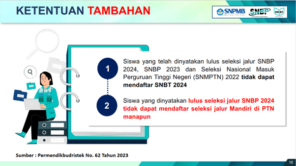
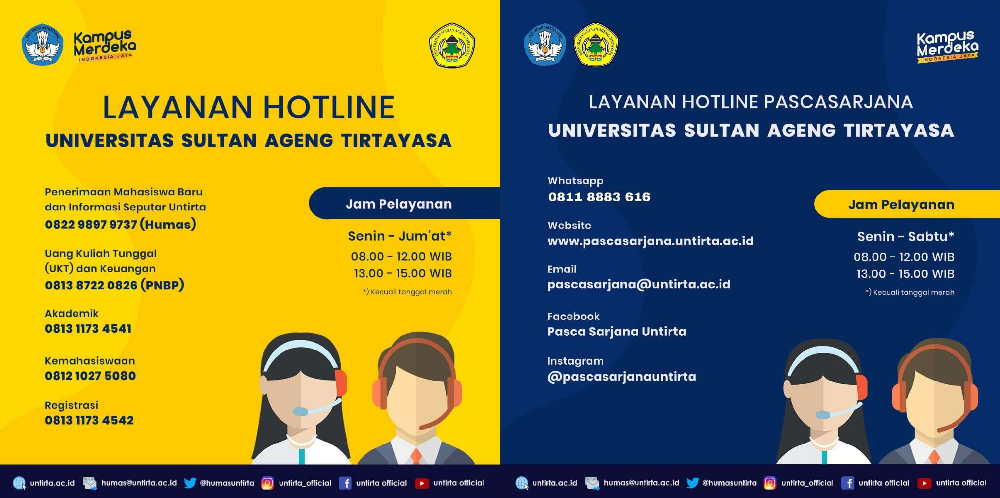
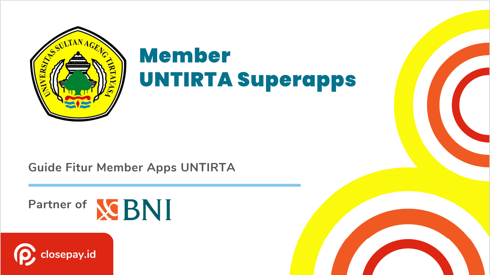

Penerimaan Mahasiswa Baru

 A.) PENERIMAAN MAHASISWA BARU JALUR MANDIRI :
A.) PENERIMAAN MAHASISWA BARU JALUR MANDIRI :
- PENDAFTARAN PASCASARJANA
- PENDAFTARAN DIPLOMA (D3) DAN ALIH JENJANG (S1)
B.) PANDUAN REGISTRASI ULANG SNBP, SNBT, DAN SMMPTN-BARAT, SMBNU
- LINK REGISTRASI ULANG ONLINE

Bagi calon mahasiswa baru yang sudah dinyatakan lulus tes seleksi / ujian masuk perguruan tinggi di Universitas Sultan Ageng Tirtayasa melalui beberapa jalur masuk : Seleksi Nasional Berdasarkan Prestasi (SNBP), Ujian Tulis Berbasis Komputer - Seleksi Nasional Berdasarkan Test (UTBK-SNBT), dan Seleksi Masuk Mandiri Perguruan Tinggi Negeri (SMMPTN) untuk Program Sarjana (S1) dan Diploma (D3). Setelah lulus seleksi bukti lulusnya dituangkan dalam dokumen Surat Keputusan Rektor Universitas Sultan Ageng Tirtayasa tentang hasil seleksi penerimaan mahasiswa baru dari beberapa jalur masuk yang diterbitkan pada tahun akademik berjalan oleh Universitas Sultan Ageng Tirtayasa.
Selanjutnya calon mahasiswa melengkapi persyaratan administrasi akademik dan administrasi keuangan atau sudah membayar Uang Kuliah Tunggal (UKT) dan sudah membayar Sumbangan Pengembangan Instansi (SPI) bagi mahasiswa baru jalur Mandiri. Nomor Induk Mahasiswa (NIM) akan diberikan jika camaba telah menyelesaikan rangkaian proses registrasi ulang.

**) PERMEN NO.194 TAHUN 2019 TENTANG BKT DAN UKT DI UNTIRTA
Hotline Fakultas / Program Studi : https://untirta.ac.id/kontak/
KALENDER AKADEMIK :
- Tahun Akademik 2020/2021
- Tahun Akademik 2021/2022
- Tahun Akademik 2022/2023
- Tahun Akademik 2023/2024
- Tahun Akademik 2024/2025

Download Panduan e-KTM UNTIRTA
Menindaklanjuti Laporan hasil pemeriksaan Inpektorat Jenderal Kemendikbudristek tentang Ijazah dan Transkrip Akademik Mahasiswa lulusan tahun 2015 -2024, yang belum mengambil ijazah dimohon segera mengambil ijazah.
Pengambilan ijazah paling lambat 30 hari setelah surat edaran ini dikeluarkan. Apabila dalam jangka waktu tersebut masih belum dilakukan, maka kami tidck bertanggung jawab atas kehilangan atau kerusakan dan segala resiko ditanggung oleh yang bersangkutan.
Surat edaran tentang Pengambilan Ijawah dan Transkrip Akademik bisa diunduh disini.
Universitas Sultan Ageng Tirtayasa kembali mengeluarkan kebijakan mengenai UKT untuk periode Semester Ganjil Tahun Akademik 2024/2025. Bagi Mahasiswa yang belum bisa membayar UKT sesuai jadwal yang telah ditentukan, Untirta memberikan kebijakan untuk Penangguhan Pembayaran UKT.
Penangguhan ini diberikan kepada mahasiswa yang tidak mendapatkan Penyesuaian UKT.
Jika sebelumnya sudah diterima di penyesuaian UKT semester ini, maka otomatis akan dikembalikan ke UKT normal. Sebelum melakukan pendaftaran penangguhan UKT, mahasiswa diharapkan mencermati dan memahami ketentuan-ketentuan berikut.
Universitas Sultan Ageng Tirtayasa kembali mengeluarkan kebijakan penyesuaian UKT untuk periode Semester Ganjil Tahun Akademik 2024/2025. Sebelum melakukan pendaftaran penyesuaian UKT, mahasiswa diharapkan mencermati dan memahami ketentuan-ketentuan berikut.
Penyesuaian UKT hanya diberikan kepada mahasiswa program sarjana dan diploma yang aktif Angkatan 2023 dan sebelumnya hanya yang mengajukan permohonan.
Penyesuaian UKT yang dapat dimohonkan oleh mahasiswa :
a. Perubahan Kelompok UKT Per-semester; wajib mengajukan ulang di setiap semester.
Calon Mahasiswa Baru yang sudah dinyatakan Lulus lewat jalur Seleksi Nasional Berdasarkan Prestasi (SNBP), UTBK-Seleksi Nasional Berdasarkan Tes (UTBK-SNBT), Seleksi Mandiri Masuk Perguruan Tinggi Negeri Barat (SMMPTN-Barat), yang ditetapkan dengan SK Rektor Universitas Sultan Ageng Tirtayasa agar mempersiapkan dan wajib melakukan kegiatan sebagai berikut:
Jadwal registrasi ulang*
NO SELEKSI REGISTRASI ONLINE PEMBAYARAN UKT 1. SNBP 29 Maret s.d. 05 April 2024 16 s.d. 25 April 2024 Pengiriman Akun Admisi ke email Camaba 27 s.
Universitas Sultan Ageng Tirtayasa kembali mengeluarkan kebijakan mengenai UKT untuk periode Semester Genap Tahun Akademik 2023/2024. Bagi Mahasiswa yang belum bisa membayar UKT sesuai jadwal yang telah ditentukan, Untirta memberikan kebijakan untuk Penangguhan Pembayaran UKT.
Penangguhan ini diberikan kepada mahasiswa yang tidak mendapatkan Penyesuaian UKT.
Jika sebelumnya sudah diterima di penyesuaian UKT semester ini, maka otomatis akan dikembalikan ke UKT normal. Sebelum melakukan pendaftaran penangguhan UKT, mahasiswa diharapkan mencermati dan memahami ketentuan-ketentuan berikut.
PEDOMAN UMUM UJIAN MASUK MANDIRI PROGRAM DIPLOMA TIGA DAN ALIH JENJANG (S1) (UMM DIPLOMA DAN ALIH JENJANG) UNIVERSITAS SULTAN AGENG TIRTAYASA TAHUN AKADEMIK 2023/2024
PROGRAM STUDI .tg {border-collapse:collapse;border-spacing:0;} .tg td{border-color:black;border-style:solid;border-width:1px;font-family:Arial, sans-serif;font-size:14px; overflow:hidden;padding:10px 5px;word-break:normal;} .tg th{border-color:black;border-style:solid;border-width:1px;font-family:Arial, sans-serif;font-size:14px; font-weight:normal;overflow:hidden;padding:10px 5px;word-break:normal;} .tg .tg-zv4m{border-color:#ffffff;text-align:left;vertical-align:top} DIPLOMA TIGA EKONOMI : D3 Akuntansi : D3 Administrasi Pajak : D3 Perbankan dan Keuangan : D3 Manajemen Pemasaran DIPLOMA TIGA KEPERAWATAN : D3 Keperawatan ALIH JENJANG EKONOMI
Calon Mahasiswa Baru yang sudah dinyatakan Lulus lewat jalur Seleksi Nasional Berdasarkan Prestasi (SNBP), UTBK-Seleksi Nasional Berdasarkan Tes (UTBK-SNBT), Seleksi Mandiri Masuk Perguruan Tinggi Negeri Barat (SMMPTN-Barat), yang ditetapkan dengan SK Rektor Universitas Sultan Ageng Tirtayasa agar mempersiapkan dan wajib melakukan kegiatan sebagai berikut:
Jadwal registrasi ulang*
NO SELEKSI REGISTRASI ONLINE PEMBAYARAN UKT 1. SNBP 01 - 10 April 2024 14 - 28 April 2023 Pengiriman Akun Admisi ke email Camaba 29 - 31 Maret 2023 Penetapan UKT bisa dicek di admisi/login kembali (13 April 2023; Sore) 2.
Program Doktor (S3) dan Program Magister (S2) Pascasarjana Universitas Sultan Ageng Tirtayasa (Untirta) berkontribusi dalam pengembangan keilmuan untuk menghasilkan karya-karya ilmiah unggulan dan menghasilkan lulusan Doktor (S3) dan Program Magister (S2) yang kompeten. Pascasarjana Untirta membuka pendaftaran mahasiswa baru Magister (S2) dan Doktor (S3) Tahun Akademik 2023/2024.
Jadwal Penerimaan Mahasiswa Baru (PMB) .tg {border-collapse:collapse;border-spacing:0;} .tg td{border-color:black;border-style:solid;border-width:1px;font-family:Arial, sans-serif;font-size:14px; overflow:hidden;padding:10px 5px;word-break:normal;} .tg th{border-color:black;border-style:solid;border-width:1px;font-family:Arial, sans-serif;font-size:14px; font-weight:normal;overflow:hidden;padding:10px 5px;word-break:normal;} .tg .tg-1wig{font-weight:bold;text-align:left;vertical-align:top} .tg .tg-baqh{text-align:center;vertical-align:top} .tg .
Kami mengucapkan selamat datang kepada mahasiswa baru Universitas Sultan Ageng Tirtayasa tahun 2022. Untuk melengkapi identitas saudara sebagai mahasiswa, kami membuka pendaftaran Kartu Tanda Mahasiswa elektronik (e-KTM). Pendaftaran e-KTM dapat dilakukan dengan mengisi formulir yang telah disediakan.
Sebelum melakukan pengisian formulir, pastikan saudara telah mempersiapkan foto dengan ketentuan sebagai berikut.
Laki-laki (jas hitam, baju putih, dasi hitam, background merah, ukuran 4×6)
Perempuan (jas hitam/blazer, baju putih, dasi hitam, background merah, ukuran 4×6)
(Diumumkan oleh Kemahasiswaan – BAKP) Wajib melakukan daftar ulang Calon Mahasiswa Baru jalur UTBK-SBMPTN, Tgl 23 s.d. 30 Juni 2022 pada Laman : https://admisi.untirta.ac.id
Selesaikan dahulu proses registrasi ulang admisi sebelum daftar ulang di laman ini.
Lengkapi data pada laman https://kip-kuliah.kemdikbud.go.id
Lengkapi dan perbaharui semua data yang dicantumkan di laman tersebut. Contoh: alamat, nomor HP, prestasi, upload foto keluarga, foto rumah (tampak ruang keluarga)
Tanggal 23 s.